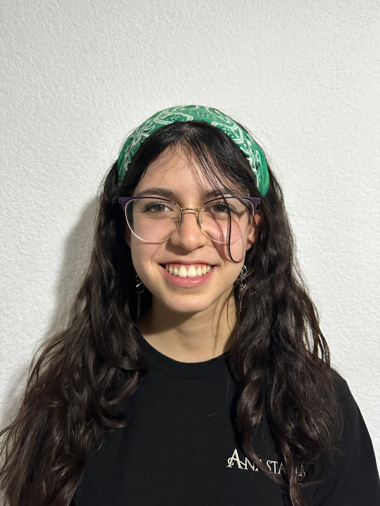

Estudiante de Ingeniería Mecánica
Estudiante del Tecnológico de Monterrey con enfoque en desarrollo de ingeniería sustentable, simulación termodinámica y automatización industrial[cite: 3, 4]. He liderado proyectos con socios formadores como Cementos Cruz Azul (gemelos digitales), Grupo Modelo y Autoplastek[cite: 3]. Fundadora y Presidenta de ASME Campus Puebla y apasionada por la integración estudiantil y la música[cite: 4].
Ajusta los deslizadores para actualizar los niveles en tiempo real en el gráfico de radar.
Desarrollo de propuesta para un sistema preventivo de fallas enfocado en hornos industriales mediante tecnología de gemelos digitales para monitoreo predictivo[cite: 3].
Diseño y optimización de caja reductora de engranes doble helicoidales[cite: 3]. Selección de geometría mediante MATLAB, análisis de fatiga/flexión, selección de material AISI 4140 y simulación en Mastercam[cite: 3].
Análisis termodinámico y modelado de planta en EES para evaluar la generación de vapor en calderas pirotubulares e intercambiadores de calor, asegurando el control tiempo-temperatura[cite: 3].